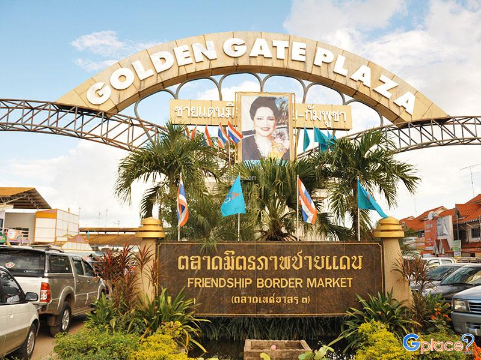
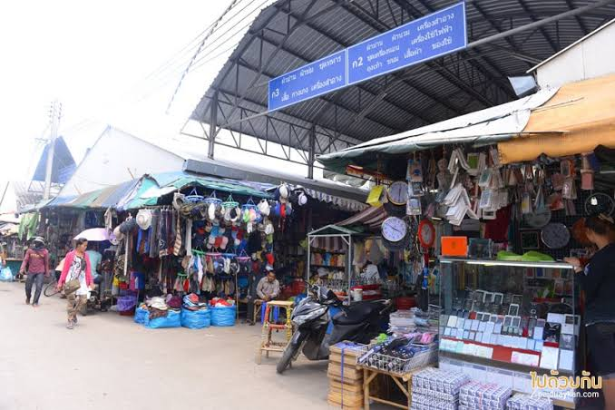

ความเป็นมา
ตลาดโรงเกลือ หรือที่รู้จักในชื่อ “ตลาดชายแดนบ้านคลองลึก” เป็นแหล่งการค้าชายแดนที่สำคัญของจังหวัดสระแก้ว ตั้งอยู่บริเวณอำเภออรัญประเทศ ใกล้กับบริเวณชายแดนไทย–กัมพูชา
ชื่อ “โรงเกลือ” มีที่มาจากพื้นที่บริเวณนี้ ซึ่งในอดีตเคยใช้เป็นสถานที่เก็บเกลือ เพื่อนำไปจำหน่ายให้กับชาวกัมพูชา ต่อมาเมื่อการใช้พื้นที่สำหรับเก็บเกลือลดลง พื้นที่ดังกล่าวจึงพัฒนาเป็นตลาดการค้าชายแดน และกลายเป็นตลาดขนาดใหญ่ที่รู้จักกันในปัจจุบัน
ตลาดแห่งนี้มีความเกี่ยวข้องกับการค้าชายแดน และการเดินทางระหว่างประเทศไทยกับประเทศกัมพูชา ทำให้มีผู้คนจากหลายพื้นที่เดินทางเข้ามา ทั้งเพื่อซื้อสินค้า ติดต่อค้าขาย และสัมผัสบรรยากาศของตลาดชายแดน
ที่ตั้งของตลาด
ตลาดโรงเกลือตั้งอยู่ในพื้นที่อำเภออรัญประเทศ จังหวัดสระแก้ว บริเวณบ้านคลองลึก ซึ่งเป็นพื้นที่สำคัญบริเวณชายแดนไทย–กัมพูชา
จังหวัด
สระแก้ว
อำเภอ
อรัญประเทศ
พื้นที่
บ้านคลองลึก
ลักษณะสถานที่
ตลาดการค้าชายแดนและแหล่งท่องเที่ยว
ลักษณะของตลาดโรงเกลือ
ตลาดโรงเกลือมีพื้นที่ค่อนข้างกว้าง และประกอบด้วยร้านค้าหลายบริเวณ ทำให้บรรยากาศภายในตลาดมีความคึกคัก โดยเฉพาะในช่วงเวลาที่มีนักท่องเที่ยว และผู้ค้าจำนวนมากเดินทางเข้ามา
ภายในตลาดมีทั้งอาคารร้านค้า ตลาดในร่ม และพื้นที่ค้าขายหลายส่วน โดยมีการจัดร้านค้าออกเป็นบริเวณต่าง ๆ เพื่อให้ผู้ที่เดินทางมาเลือกซื้อสินค้า สามารถเดินชมตลาดได้สะดวกมากขึ้น
นอกจากการเดินเลือกซื้อสินค้าแล้ว นักท่องเที่ยวยังสามารถสัมผัสบรรยากาศ ของพื้นที่การค้าชายแดน ซึ่งมีความแตกต่างจากตลาดทั่วไป เพราะเป็นพื้นที่ที่เชื่อมโยงผู้คน และการค้าระหว่างประเทศ
พื้นที่และตลาดย่อย
บริเวณตลาดโรงเกลือมีพื้นที่ค้าขายหลายส่วน โดยมีตลาดย่อยและศูนย์การค้าหลายแห่ง แต่ละบริเวณมีลักษณะร้านค้าแตกต่างกัน ทำให้ผู้มาเยือนสามารถเดินสำรวจ ตลาดได้หลากหลายรูปแบบ
- ตลาดโรงเกลือเก่า เป็นพื้นที่ค้าขายที่มีสินค้าหลากหลาย
- ตลาดโรงเกลือใหม่ มีร้านค้าจำนวนมากและมีสินค้าหลายประเภท
- ตลาดเดชไทย เป็นพื้นที่ที่มีร้านค้าจำนวนมาก และมีสินค้าหลากหลาย
- ตลาดเบญจวรรณ เป็นอีกหนึ่งพื้นที่ค้าขายสำคัญ ภายในบริเวณตลาดโรงเกลือ
- โกลเด้น เกต พลาซ่า เป็นศูนย์การค้าในร่ม ที่จัดร้านค้าเป็นหมวดหมู่ และมีหลังคาช่วยกันแดดและฝน
บรรยากาศภายในตลาด
สิ่งที่ทำให้ตลาดโรงเกลือมีความน่าสนใจ คือบรรยากาศของตลาดการค้าชายแดน ซึ่งมีผู้คนเดินทางเข้ามาอย่างหลากหลาย ทั้งนักท่องเที่ยว ผู้ซื้อ และผู้ค้า
ภายในตลาดมีร้านค้าเรียงรายเป็นจำนวนมาก ทำให้การเดินชมตลาดมีความหลากหลาย นักท่องเที่ยวสามารถใช้เวลาเดินสำรวจ แต่ละบริเวณและสัมผัสบรรยากาศ ของตลาดชายแดนได้อย่างใกล้ชิด
ด้วยพื้นที่ตลาดที่มีขนาดใหญ่ การเดินเที่ยวชมให้ทั่วอาจต้องใช้เวลา จึงมีบริการบางส่วนที่ช่วยอำนวยความสะดวก เช่น จักรยานสำหรับใช้เดินทางภายในตลาด และบริการรถลากสำหรับขนสินค้า
จุดเด่นของสถานที่
- เป็นตลาดการค้าชายแดนที่มีชื่อเสียงของจังหวัดสระแก้ว
- ตั้งอยู่ใกล้บริเวณชายแดนไทย–กัมพูชา
- มีพื้นที่ตลาดขนาดใหญ่และร้านค้าจำนวนมาก
- มีตลาดย่อยและพื้นที่ค้าขายหลายบริเวณ
- มีทั้งพื้นที่ตลาดกลางแจ้งและศูนย์การค้าในร่ม
- เป็นสถานที่ที่สามารถสัมผัสบรรยากาศ การค้าชายแดนได้อย่างชัดเจน
- เป็นสถานที่ท่องเที่ยวที่มีความเกี่ยวข้อง กับเศรษฐกิจและวิถีชีวิตของจังหวัดสระแก้ว
ความสำคัญต่อจังหวัดสระแก้ว
ตลาดโรงเกลือมีความสำคัญต่อจังหวัดสระแก้ว ทั้งในด้านการท่องเที่ยวและการค้าชายแดน เนื่องจากเป็นหนึ่งในสถานที่ที่มีชื่อเสียง และเป็นจุดหมายที่นักท่องเที่ยวรู้จัก เมื่อเดินทางมายังจังหวัดสระแก้ว
นอกจากนี้ ตลาดยังมีบทบาทในด้านเศรษฐกิจ เนื่องจากเป็นพื้นที่ที่ผู้ประกอบการ และผู้ค้าจำนวนมากเข้ามาประกอบธุรกิจ ทำให้เกิดการหมุนเวียนของผู้คน และกิจกรรมทางเศรษฐกิจภายในพื้นที่
ตลาดโรงเกลือจึงไม่ได้เป็นเพียงสถานที่ สำหรับเดินซื้อสินค้าเท่านั้น แต่ยังเป็นส่วนหนึ่งของภาพลักษณ์ จังหวัดสระแก้วในฐานะจังหวัดชายแดน ที่มีความเชื่อมโยงกับประเทศกัมพูชา
การเดินทาง
จากตัวเมืองอรัญประเทศสามารถเดินทาง มุ่งหน้าไปทางชายแดนตามทางหลวงหมายเลข 33 ประมาณ 5.5 กิโลเมตร จากนั้นเข้าสู่บริเวณตลาดโรงเกลือ ซึ่งตั้งอยู่บริเวณบ้านคลองลึก
เนื่องจากตลาดมีพื้นที่ค่อนข้างกว้าง หากต้องการเที่ยวชมหลายพื้นที่ ควรเผื่อเวลาในการเดินทางและเดินชมตลาด เพื่อให้สามารถสำรวจบรรยากาศได้อย่างทั่วถึง
ทำไมถึงน่าสนใจ?
ตลาดโรงเกลือมีความน่าสนใจ เพราะเป็นมากกว่าตลาดทั่วไป แต่เป็นพื้นที่ที่สะท้อนให้เห็นถึง วิถีชีวิตและการค้าบริเวณชายแดน ระหว่างประเทศไทยกับประเทศกัมพูชา
นักท่องเที่ยวสามารถสัมผัสบรรยากาศ ของตลาดขนาดใหญ่ที่มีร้านค้าจำนวนมาก เดินชมพื้นที่ต่าง ๆ และเรียนรู้ เกี่ยวกับความสำคัญของการค้าชายแดน ที่มีต่อจังหวัดสระแก้ว
ด้วยเหตุนี้ ตลาดโรงเกลือจึงถือเป็น สถานที่ท่องเที่ยวที่มีเอกลักษณ์ และเป็นหนึ่งในสถานที่สำคัญ ที่ช่วยสะท้อนตัวตนของจังหวัดสระแก้ว
ข้อมูลสรุป
ชื่อสถานที่
ตลาดโรงเกลือ (ตลาดชายแดนบ้านคลองลึก)
ประเภท
แหล่งท่องเที่ยวและตลาดการค้าชายแดน
จังหวัด
สระแก้ว
อำเภอ
อรัญประเทศ